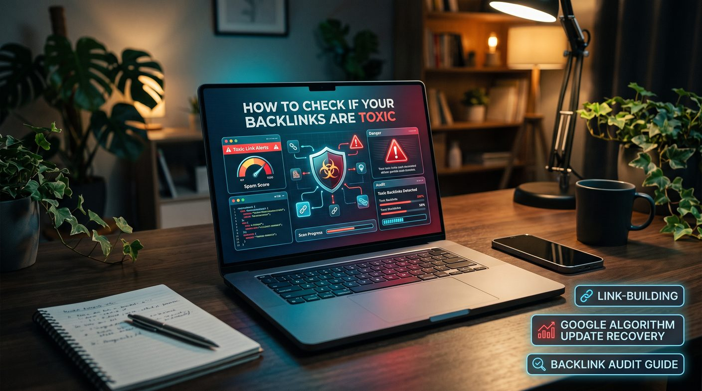

To check whether backlinks are toxic, export your links from Google Search Console and a backlink tool, review suspicious links at page level for relevance and how they were created, and check Search Console for manual actions. Leave unsolicited low-quality links alone, remove or qualify manipulative links you control, and use the disavow tool only when Google guidance and your situation justify it. A tool score alone is not proof of harm.
- What are toxic backlinks?
- Do toxic backlinks hurt Google rankings?
- 1. Review your backlink profile
- 2. Identify common warning signs
- 3. Evaluate the linking page, not just the domain score
- 4. Check Google Search Console for manual actions
- 5. Decide whether to ignore, remove or disavow a backlink
- 6. How to create a backlink audit spreadsheet
- 7. Can toxic backlinks cause a Google algorithm penalty?
- 8. How to prevent future backlink problems
- Backlink toxicity audit checklist
- Conclusion
What are toxic backlinks?
"Toxic backlink" is a term commonly used by SEO tools and professionals to describe a link that may be associated with spam, manipulation or an unnatural link-building pattern.
Google does not provide a universal public toxicity score for backlinks. Different SEO platforms use their own metrics and detection methods to flag links they consider potentially risky.
A backlink may deserve investigation if it appears to have been created as part of a link scheme intended to manipulate rankings. Examples include paid links that pass ranking credit without appropriate qualification, automated link creation and large-scale exchanges designed mainly to influence search results.
By contrast, an irrelevant or low-authority website linking to your content is not, by itself, proof of a penalty risk.
Do toxic backlinks hurt Google rankings?
The effect of a suspicious backlink depends on its context and how it was created. Google's spam systems are designed to identify and neutralise various forms of link spam, so the presence of a questionable link does not necessarily mean it is harming your website.
The distinction between an unsolicited link and a link scheme matters. You generally cannot control every website that links to you, and you should not assume your site is being penalised just because a backlink tool reports a high toxicity score.
When should you investigate further?
- You or a previous SEO provider deliberately purchased large quantities of ranking-manipulating links.
- Your website has a large number of paid or automated links created through a known link scheme.
- You received a manual action notification related to unnatural links in Google Search Console.
- Your backlink profile contains clear evidence of coordinated spam activity connected to your own link-building work.
- You discover links from hacked pages, injected content or other suspicious placements that need investigation.
Even then, review the evidence before acting. A ranking decline alone does not prove that backlinks caused the problem.
1. Review your backlink profile
Start by collecting backlink data from reliable sources. Use Google Search Console alongside one or more reputable backlink analysis tools where appropriate.
Google Search Console
The Links report in Google Search Console shows examples of external links pointing to your website, with information about linking sites and commonly linked pages. It is useful for reviewing your backlink profile, but it is not a complete list of every link on the web and it does not provide an official toxicity score.
Third-party backlink tools
SEO tools can add information such as referring domains, anchor text, link attributes, estimated authority metrics and potentially suspicious patterns. Their data coverage and risk classifications differ.
Export the available backlink data and organise it in a spreadsheet or audit system. Where possible, include:
- Referring domain.
- Exact page containing the backlink.
- Destination page on your website.
- Anchor text.
- Link attribute, such as follow, nofollow, sponsored or UGC.
- First-seen and last-seen dates, if available.
- Tool-specific toxicity or risk indicators.
- Notes about the source, context and suspected cause.
Keep the original export so you can compare findings after the audit. Do not treat a single tool's classification as a final decision.
2. Identify common warning signs
Several patterns can justify closer inspection. None of the following signs, taken alone, proves that a backlink is harmful.
Links from obvious spam websites
Look for websites filled with unrelated pages, automatically generated articles, keyword-stuffed content or large numbers of outbound links with little editorial value.
Unnatural exact-match anchor text
If many backlinks use the same commercial phrase, especially from unrelated websites, investigate whether the pattern came from a deliberate link-building campaign. Exact-match anchors are not automatically harmful, but large-scale manipulation can be a warning sign.
Paid links that pass ranking credit
Paid placements, sponsorships and advertisements should be handled according to Google's link spam policies. Where appropriate, paid links should be qualified with attributes such as rel="sponsored" or rel="nofollow".
Automated or mass-generated links
Links created through automated tools, large-scale comment spam, forum spam or low-quality profile generation can indicate manipulative activity, especially when the purpose is to influence rankings rather than help users.
Unnatural link exchanges
Normal business relationships can produce legitimate reciprocal links. However, large-scale exchanges or networks organised mainly to manipulate search rankings warrant investigation.
Irrelevant placements with no editorial context
A link from a website in another industry is not automatically toxic. Examine whether the linking page gives a meaningful reason to reference your website or whether the link exists only for SEO.
Hacked pages or injected links
Unexpected links on compromised websites or injected into pages may indicate a security issue. If your own website is compromised, investigate your hosting environment, website files, accounts and security logs as well.
3. Evaluate the linking page, not just the domain score
Domain-level metrics help you prioritise research, but a website score cannot fully describe the quality of a particular backlink.
Open the linking page, when safe to do so, and examine the actual content and context.
Questions to ask during the review
- Does the page contain meaningful information for real readers?
- Is the link relevant to the surrounding content?
- Does the website publish useful content or mostly sell links?
- Does the page contain excessive unrelated outbound links?
- Is the content original, or does it appear automatically generated or copied?
- Was the link earned naturally, purchased, exchanged or created through automation?
- Is the page accessible and legitimate, or does it show signs of compromise?
Do not open suspicious downloads or interact with potentially malicious websites unnecessarily. Use appropriate security precautions when investigating questionable sources.
4. Check Google Search Console for manual actions
If you are concerned about unnatural backlinks, check the Manual Actions section of Google Search Console for your verified website property.
A manual action is different from a third-party tool flagging a backlink as toxic. A notification in Search Console may identify a specific policy issue and give guidance on what to address.
If a manual action is present
- Read the notification carefully and identify the affected pages or link issue.
- Review your historical link-building activities, including work done by previous agencies or contractors.
- Collect evidence of links that violate Google's policies or were created through manipulative practices.
- Make reasonable efforts to remove or appropriately qualify links under your control.
- Use the disavow tool only when its use is justified and you understand the consequences.
- After addressing the issue, submit a reconsideration request through Search Console if the manual action requires one.
Do not submit a reconsideration request for a ranking decline alone. Reconsideration requests apply to manual actions, not ordinary changes in search performance.
5. Decide whether to ignore, remove or disavow a backlink
Not every suspicious link needs the same response. Choose an action based on the evidence, the source of the link and whether you have a genuine link spam problem.
Option A: leave the link alone
This is often appropriate for unsolicited links from low-quality or irrelevant sites when there is no evidence of a manipulative campaign or manual action. Google's systems may ignore or neutralise many such links.
Option B: request removal
If you deliberately acquired a manipulative link or control the website containing it, consider removing it or asking the publisher to do so. For paid placements, appropriate link qualification may be an alternative where the placement itself is legitimate.
Keep a record of removal requests and responses. Avoid paying a removal service that threatens you with penalties unless you buy its service.
Option C: use Google's disavow tool when justified
The disavow tool lets eligible website owners ask Google to disregard specified links or domains when evaluating their site. It is an advanced tool for specific circumstances, not a routine backlink-cleaning feature.
Google generally recommends considering disavowal when both of these conditions apply:
- Your site has a considerable number of spammy, artificial or low-quality backlinks; and
- Those links have caused, or are likely to cause, a manual action.
Use the official Google Search Central guidance before preparing a disavow file. Incorrectly disavowing useful links can harm your site's performance.
When should you avoid disavowing?
- When a tool flags a link only because the referring domain has a low authority score.
- When you have no evidence that the links were created through a manipulative campaign.
- When the links are legitimate editorial references, business listings or relevant citations.
- When you want to use disavowal as a routine monthly backlink maintenance task.
6. How to create a backlink audit spreadsheet
A simple spreadsheet helps you review suspicious links consistently and document your decisions.
| Field | Purpose |
|---|---|
| Referring domain | Identifies the website linking to you. |
| Linking page URL | Allows inspection of the exact placement. |
| Target URL | Shows which page on your website receives the link. |
| Anchor text | Helps identify unusual repetition or keyword patterns. |
| Risk evidence | Records the actual reason for concern, not only a tool score. |
| Link origin | Records whether the link was earned, paid, exchanged, automated or unknown. |
| Decision | Classifies the link as keep, investigate, remove or consider disavowing. |
| Action and date | Tracks outreach, removal requests and subsequent review. |
Make decisions on documented evidence. If a tool flags a link but you cannot identify a meaningful risk, mark it for further review rather than automatically disavowing it. Our SEO audits include this kind of link review as part of a full site diagnosis.
7. Can toxic backlinks cause a Google algorithm penalty?
The phrase "algorithm penalty" is commonly used for any decline in organic search performance, but it can refer to several different situations.
A decline may result from an algorithm update, increased competition, content quality issues, technical problems, changes in search demand or link spam systems neutralising the effects of manipulative links. You cannot identify the cause from a traffic drop alone.
What to investigate after a ranking decline
- Check Google Search Console for manual actions and security issues.
- Compare impressions and clicks before and after the decline.
- Identify which pages and search queries lost visibility.
- Review technical changes, indexing issues and website migrations; our technical SEO audit checklist covers these.
- Assess content relevance, quality and competing pages.
- Review backlink history for evidence of deliberate link spam.
- Compare the timing with confirmed search updates, while avoiding assumptions based only on dates.
If your website had a significant decline, use a structured diagnosis rather than immediately disavowing hundreds of domains. Our guide to Google algorithm update recovery explains how to investigate ranking losses and prioritise corrective work.
8. How to prevent future backlink problems
The best way to reduce backlink risk is to set a clear link-building policy and avoid manipulative acquisition methods.
- Prioritise relevant editorial links and genuine industry relationships.
- Avoid automated services that promise thousands of backlinks.
- Review paid placements and sponsorships for appropriate link attributes.
- Do not purchase links solely to manipulate search rankings.
- Check the quality of websites before accepting link placements.
- Maintain records of link-building campaigns and external SEO providers.
- Monitor important changes in your backlink profile periodically.
- Invest in useful content that people have a genuine reason to reference.
Learn more about sustainable link acquisition in our link-building services guide, our walkthrough of building backlinks in Sri Lanka and the 2026 backlinks guide. A sound strategy focuses on relevance, useful content and legitimate relationships rather than the raw number of backlinks.
Backlink toxicity audit checklist
- Export available backlink data from Google Search Console and suitable SEO tools.
- Review suspicious links at the page level rather than relying only on domain metrics.
- Identify evidence of paid, automated or otherwise manipulative link-building campaigns.
- Check Google Search Console for manual actions.
- Investigate security issues if links appear to come from hacked pages or your own compromised site.
- Leave unsolicited low-quality links alone when there is no evidence that action is needed.
- Remove or appropriately qualify manipulative links where possible.
- Consider disavowal only when Google's guidance and your situation justify it.
- Document every decision and review the site's performance over time.
Conclusion
Checking for toxic backlinks is about identifying genuine link spam risks, not eliminating every link an SEO tool labels as low quality. Review the linking page, understand how the link was created and look for evidence before deciding whether to act.
For most websites, maintaining useful content, earning relevant links and avoiding manipulative link schemes is more productive than repeatedly cleaning up unsolicited backlinks. If your site has a manual action or a history of artificial link building, a documented audit can help you work out the appropriate next steps.
For professional support with backlink analysis and sustainable off-page SEO, explore our link-building services or speak to an SEO specialist in Sri Lanka. If you are investigating a major decline in organic visibility, see our guide to Google algorithm update recovery.